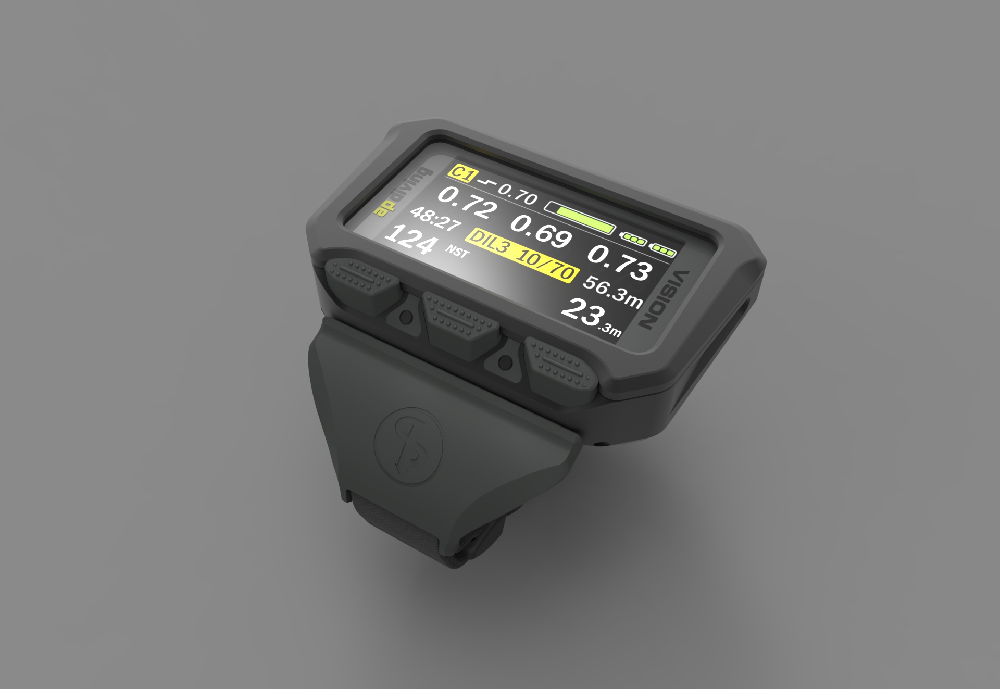
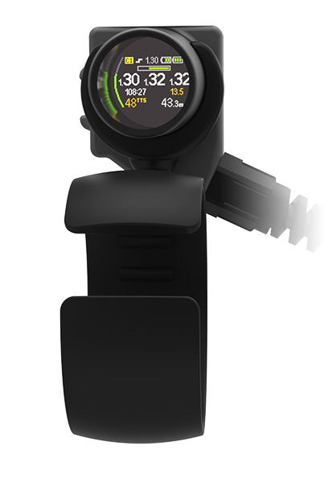
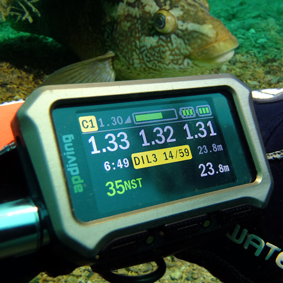

A Dive-Computer Interface
Product Designer (placement)
The brief
The dive computer monitors critical aspects of the divers equipment.
I was asked to redesign the display with a new LCD screen colour screen. However, the software was to remain the same thus restricting the screen to four stacked 56 pixel bands and with the added limitation that no two colours may touch.
Selectable Themes

Inclusive design principles means that theres a colour theme for every diver.
Intuitive Graphical Layout
I applied the AP Diving signature yellow throughout the interface for continuity.
The graphical layout complements both the previous Vision screen and the AP HUS – Head-Up Screen offering an intuitive, seamless transition for existing AP rebreather divers.
3rd Place

DIVER Magazine placed the Vision2020 Handset in 3rd place as product of the year out of an impressive lineup of products.
Other work